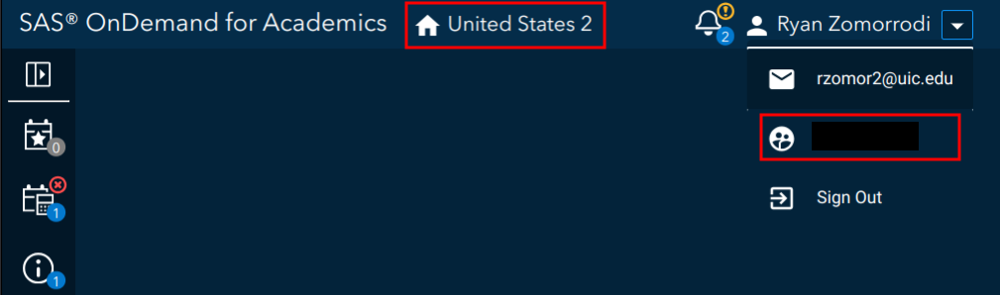

General configuration
sasquatch works by utilizing the SASPy
python package, similar to packages like sasr
or configSAS. This
means everything we do to connect R and SAS, needs to go through
SASPy.
Configuration steps for SASPy can vary greatly depending
on the SAS client, but all configuration is specified within the
sascfg_personal.py file inside of the SASPy
package.
Setting up
Use the following function to create a
sascfg_personal.py templated file.
sasquatch::configure_saspy()Note: sasquatch::configure_saspy() will
configure reticulate’s current python version. You may have
to run reticulate::use_virtualenv("r-saspy") in order to
specify that you want to configure that python environment.
This will create a file like the following:
SAS_config_names should contain a string list of the
variable names of all configurations. Configurations are specified as
dictionaries, and configuration parameters depend on the access
method.
Additionally, some access methods will require an additional
authentication file (.authinfo for Linux and Mac,
_authinfo for Windows) stored in the user’s home directory,
which are constructed as follows:
config_name user {your username} password {your password}Access methods
From here, you will need to fill out the config_name
dictionary with your configuration definition. The required definition
fields will depend on the access method required to connect to your SAS
client.
The following is a breakdown of the access method by SAS deployment:
- Stand-alone SAS 9 install
- On Linux
- Client Linux
- STDIO - if on same machine
- SSH (STDIO over SSH) if not the same machine. This works from Mac OS
too.
- STDIO - if on same machine
- Client Windows
- SSH (STDIO over SSH)!
- SSH (STDIO over SSH)!
- Client Linux
- On Windows
- Client Linux
- Can’t get there from here
- Can’t get there from here
- Client Windows
- IOM or COM - on same machine. Can’t get there if different
machines
- IOM or COM - on same machine. Can’t get there if different
machines
- Client Linux
- On Linux
- Workspace server (this is SAS 9, and deployment on any platform is
fine)
- Client Linux or Mac OS
- IOM - local or remote
- IOM - local or remote
- Client Windows
- IOM or COM - local or remote
- IOM or COM - local or remote
- SAS Viya install
- On Linux
- Client Linux
- HTTP - must have compute service configured and running (Viya V3.5
and V4)
- STDIO - over SSH if not the same machine (this was for Viya V3
before Compute Service existed, not for V4)
- HTTP - must have compute service configured and running (Viya V3.5
and V4)
- Client Windows
- HTTP - must have compute service configured and running (Viya V3.5
and V4)
- HTTP - must have compute service configured and running (Viya V3.5
and V4)
- Client Linux
- On Windows
- HTTP - must have compute service configured and running (Viya V3.5 and V4)
- On Linux
- Client Linux or Mac OS
More information
Further documentation and examples for each access type can be found
within the SASPy
configuration documentation
SAS On Demand for Academics configuration
Registration
SAS On Demand for Academics (ODA) is free SAS client for professors, students, and independent learners. Create an account at https://welcome.oda.sas.com/.
Once you have set up your account, log in and note the ODA server (in the picture below United States 2) and your username (under the email in the profile dropdown). We will need these for later.

Java installation
ODA relies on the IOM access method, which requires Java. Make sure
Java is installed on your system. You can download Java from their website. ODA also
requires you to install additional
encryption jars within the java/iomclient folder inside
of your SASPy installation.
Note: Adding your java installation to path will
help sasquatch::configure_saspy() find your Java
installation path. Otherwise, note the path so that you can manually
enter it within your sascfg_personal.py file.
Configuration
Set up for ODA is super easy. Run config_saspy() and
follow the prompts.
sasquatch::configure_saspy(template = "oda")Note: sasquatch::configure_saspy() will
configure reticulate’s current python version. You may have
to run reticulate::use_virtualenv("r-saspy") in order to
specify that you want to configure that python environment.
config_saspy(template = "oda") will:
-
Create a
sascfg_personal.pyfile with all the relevant configuration information. Generally, yoursascfg_personal.pywill look something like:SAS_config_names=['oda'] oda = { 'java' : 'path_to_java', # replace with your java path # Uncomment the one for your region #US Home Region 1 # 'iomhost' : ['odaws01-usw2.oda.sas.com','odaws02-usw2.oda.sas.com','odaws03-usw2.oda.sas.com','odaws04-usw2.oda.sas.com'], #US Home Region 2 #'iomhost' : ['odaws01-usw2-2.oda.sas.com','odaws02-usw2-2.oda.sas.com'], #European Home Region 1 #'iomhost' : ['odaws01-euw1.oda.sas.com','odaws02-euw1.oda.sas.com'], #Asia Pacific Home Region 1 #'iomhost' : ['odaws01-apse1.oda.sas.com','odaws02-apse1.oda.sas.com'], #Asia Pacific Home Region 2 #'iomhost' : ['odaws01-apse1-2.oda.sas.com','odaws02-apse1-2.oda.sas.com'], 'iomport' : 8591, 'authkey' : 'oda', 'encoding' : 'utf-8' } -
Create an
authinfofile, which you will be able to write your ODA credentials into. Generally, yourauthinfofile will look something like:oda user {your username} password {your password} Request that you download the SAS ODA encryption jars into the
SASPypackage’sjava/iomclient/folder.
More information about ODA configuration can be found in the ODA
section of SASPy configuration documentation.